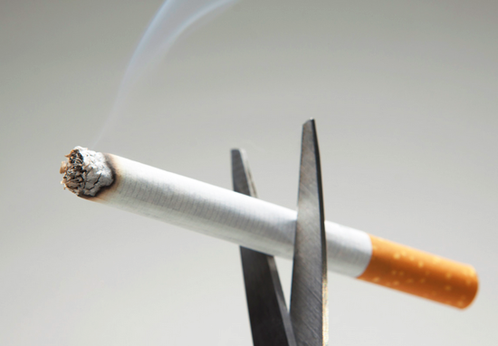

금연하는 방법
첫번째 물을 많이 마시자!
물을 마시게 되면 몸 속에 쌓인 니코틴을 배출해 의존도를 낮추고 치아와 잇몸의 니코틴을 씻어내며 입마름증상을 해소시켜 흡연의 욕구가 자제되어 금연에 도움을 준다.
두번째 과일을 먹자!
군것질 보다는 상큼 달달한 비타민이 풍부한 채소와 과일이 좋다.
충치예방에도 도움을 주고 특히 당근은 흡연으로 잃어버린 비타민A를 보충해주며 양파는 폴리페놀성분이 니코틴 해독에 도움을 준다.
세번째 의료기관을 이용하자!
금연치료 의료기관에서 프로그램에 참여하면 상담료,치료약 등을 무료로 받을 수 있다.
네번째 한번에 '확' 끊는것 보다 조금씩 천천히 줄이자!
이건 제가 듣고 실천한 방법인데요. 한번에 '확' 끊는것 보단 조금씩 줄여 나가는 것이 더 금연성공률을 높일 수 있다고 배웠습니다.
다 같이 꼭 금연에 성공해 봅시다!
출처